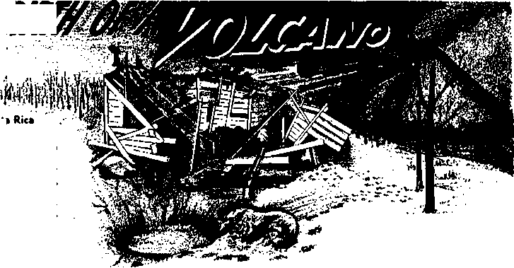

Christmas Among Non-Christians
Safeguard Your Possessions
A Father Talks to His Son
The Rebirth of a Volcano
DECEMBER 8, 1968
THE REASON FOR THIS MAGAZINE
News sources that are able to keep you awake to the vital issues of our times must be unfettered by censorship and selfish interests. "Awake!" has no fetters. It recognizes facts, faces facts, is free to publish facts. It is not bound by political ties; It is unhampered by traditional creeds. This magazine keeps itself free, that it may speak freely to you. But it does not abuse its freedom. It maintains integrity to truth.
The viewpoint of “Awake!" is not narrow, but is international. “Awake!" has its own correspondents in scores of nations. Its articles are read in many lands, in many languages, by millions of persons.
In every issue "Awake!" presents vital topics on which you should be informed. It features penetrating articles on social conditions and offers sound counsel for meeting the problems of everyday life. Current news from every continent passes in quick review. Attention is focused on activities in the fields of government and commerce about which you should know. Straightforward discussions of religious issues alert you to matters of vita! concern. Customs and people in many lands, the marvels of creation, practical sciences and points of human interest are all embraced in its coverage. "Awake!" provides wholesome, instructive reading for every member of the family.
“Awake!" pledges itself to righteous principles, to exposing hidden foes and subtle dangers, to championing freedom for all, to comforting mourners and strengthening those disheartened by the failures of a delinquent world, reflecting sure hope for the establishment of God's righteous new order in this generation.
Get acquainted with "Awake!” Keep awake by reading "Awake!”
Published Simultaneously in the United States by tiu WATCHTOWER BIBLE AND TRACT SOCIETY OF NEW YORK, INC. 117 Adams Street Brooklyn. N.Y. 11201, U.S.A.
AND IN ENQLAND BY WATCH TOWER BIBLE AND TRACT SOCIETY
Watch Tower House. The Ridgeway London N.W. 7, England N. H. Know. President Grant Suiter. Secretary
Average printing each issue: 5,300,000 Now published in 26 languages
5d * EOftf (Airtmlin, 5ft; Sa nth Africa, 3 '/at)
Yearly aiibkieriutJon rates
Offices for semi mo nth ly editions
America, U.S,, 117 Adams Street, Brooklyn, N.Y. 11201 $1 Australia. 11 Beresford Rd., Strathfleld, NSW. 2135 SI Canada, IBO BridjreJanf? Are., Toronto 19, Ont. $1
England, Watch Tower House,
The Eidieway, London N.W. 7 3/6
Rew Zealand, 621 New North Rd., Auckland 3 ’SOc Seith Africa, Private Bag 2, P.O. Elaudsfontein, Tri. 70c
(Ninthly editions coat half tfie above rates.)
RaMiftancM for subscriptions should he sent to the office in your country. Otherwise send your remittance to Brooklyn. Notice of expiration is sent at least two Issues before subscription expired.
Semimonthly—Afrikaans, Cebuano, Danish, Dutch, English, Finnish;, French, German, Greek, Iioka, Italian, Japanese, Korean, Norwegian, Portuguese, Spanish, Swedish, Tagajng, Zulu.
Monthly—Chinese, Clnyanja, Hlligaynun, Malayalam, Polish, Tamil, Ukrainian, "
CHANGES OF ADDRESS should reuh 1$ thirty days before year moving date. Gl*a Re your old and new addreu (If possible, ynr eld address label). Write Watch Tower, Watch Tower House, The Ridgeway, London N.W. 7, England.
Entered as aeeond-claES matter at Brooklyn, N.Y. Printed In England
The Bible translation regularly awd In “Awake!" Is the New World Translation of the Italy Scriptures, 1961 edition. When other translations are used, this Is cfearly marked.
CONTENTS
Christmas Among Non-Christians
Millions of People Are Worried
Jehovah’s Witnesses and
Pope's Visit to Latin America—Why? 24 "Your Word Is Truth”
Is Use of the Rosary Christian? 27
"It is already the hour for you to awake.” ~Romanr 13;11 \^Z
Volume XLIX
London, England, December 8, 1988
Number 23
Christmas Amons T2on-Christians
DID you know that the celebration of Christmas is not limited to people who profess to be Christian? That is right. There are non-Christians who engage in its festivities with as much zest as members of the various churches of Christendom, if not more.
In Japan, for example, Christmas is one of the biggest holidays of the year despite the fact that there are only about 800,000 professed Christians in a population of over 97 million. Gay Christmas lights decorate just about every street in Tokyo, and elaborately decorated trees abound in the business district. Gilded Christmas bells hang from street signs at the intersections. Recorded Christmas carols can be heard on public-address systems in just about every major shop. The stores display the "Merry Christmas" greeting along with enticements to buy and give gifts.
Santa Clauses can be seen almost everywhere in Japanese business districts. Some of the large department stores have ones that are several stories high. The fashionable Takashimaya store even dresses its girl elevator operators in Santa Claus suits with miniskirts. Out on the streets Santa Clauses walk around with sandwich-
board signs ad- J
vertising various C
things.
Christmas par- r/gjgM ties that are so popular in na- ^^7 F’ tions professing to be Christian ; '
are also popular \ .
in Japan. In fact, '
Christmas Eve in Japan is a time for reveling. The New York Times of December 25, 1966, reported that the Japanese police vans were especially padded "so the drunks would not hurt themselves.”
Like the Japanese, many pagan Africans in Kenya regard. Christmas as a time for grand festivities. On Christmas day they feast, drink beer, exchange gifts and dance. They get whipped into a frenzy from drumming and dancing all night long. Many of their huts have Christmas trees decorated with the flowers of the bougainvillea. But they use evergreens such as Cyprus trees or banana fronds as Christmas trees rather than fir trees.
Among the Buddhists living in Hawaii there is a similar enthusiasm every year for Christmas. Like professed Christians, they exchange Christmas gifts, decorate their homes for the holiday, give presents to their children and hold family feasts.
Neither the Buddhists in Hawaii nor the non-Christians in Japan and Africa observe Christmas because they believe the claims made about it by the churches of Christendom. They observe it because it is a popular holiday. It is for the same reason that many Jews become involved in the celebration.
Although rejecting Jesus Christ, whose birth Christmas is supposed to commemorate, a great many Jews decorate their places of business with Christmas adornments, join in Christmas office parties and send out holiday cards. In a sense they are joining in the celebration.
Even the Jewish Hanukkah festival has been influenced by the Christmas celebration. Regarding Hanukkah, Rabbi Morris N. Kertzer states in his book What Is a Jew?: “American Jews have transmuted this minor festival into a major one largely because its traditional customs so closely parallel the Christmas celebration which occurs at the same time. ... In imitation of the general atmosphere prevailing in December, Hanukkah is now marked by exchanges of gifts for young and old, and homes are gaily decorated with a variety of Hanukkah symbols.”
There are a great many other people in the nations of Christendom who do not believe the religious claims about Christmas but join in its festivities. Some are atheists, others are materialists who are not necessarily atheists, and still others are churchgoers who reject the Bible account about Jesus Christ as being true history. Nevertheless, they set up Christmas trees in their homes, exchange Christmas presents, feast, drink, wish people a merry Christmas and have a gay time celebrating this religious holiday.
It should not be surprising that there are non-Christians who like to celebrate Christmas, because the celebration had its origin among such people. Ancient pagans had a wild celebration at the same time of year to welcome the winter solstice, when the period of daylight begins to get longer. In fact, Christmas, according to many well-known reference works, is actually a pagan celebration, only its name and meaning having been changed.
The book The Story of Christmas by Michael Harrison observes: “Though the celebration of the Winter Solstice dates from thousands of years before Christ, and was once celebrated with rites which had nothing to do with Christianity, a new significance was given to the ancient festival when the Church decided, in the earliest days of Christianity, to celebrate the birth of Christ on a date that ancient usage had made already one of universal respect.”
This and other works of history acknowledge that many of the symbols in the Christmas celebration came from pagan religious festivals of the winter solstice such as the Roman Saturnalia, the festival of Saturn. It ran from December 17 to 24. Regarding this Roman festival the book ‘Christmas the World Over by Daniel Foley states: “Even as we observe Christmas today, it was a time of rejoicing, hilarity, feasting and merrymaking. All work ceased, children were released from customary discipline, ill will was forgotten, and even wars ceased at this season of the year. Evergreen boughs and berries were brought indoors to deck homes and thus dispel the gloom of winter. The exchange of presents was a common practice.”
Closely following the Saturnalia and climaxing it was the Brumalia on December 25. It was a special day set aside by the Mithras-worshiping Romans for reverence of the sun. On this day they celebrated what they regarded as the “Day of the Birth of the Unconquered Sun.” With the days getting longer they considered their god of the sun and of light, Mithras, as conquering the darkness of winter. So this was his birthday. It was the greatest feast day of the Mithraic religion. The Brumalia and the Saturnalia, according to Yitetoitcai evidence, are responsible tor the date of Christmas and many of the Christmas customs.
If we go back farther in history we will find that the roots of Christmas go beyond the Saturnalia to the pagan Babylonians. This is pointed out in the book 4,000 Years of Christmas by Earl W. Count, He says on page 18: “Mesopotamia is the very ancient Mother of Civilization. Christmas began there, over four thousand years ago, as the festival which renewed the world for another year. The 'twelve days’ of Christmas; the bright fires and probably the Yule log; the giving of presents; the carnivals with their floats, their merrymaking and ciownings, the mummers who sing and play from house to house; the feastings; the church processions with their lights and song—all these and more began there centuries before Christ was born.”
Was Jesus Bom on Christmas Dap?
Perhaps you are wondering how Christmas fits in with the birth of Jesus Christ, since its origin was pagan. It may surprise you to learn that Jesus was not born on that day. Although the Bible does not give the date of his birth, it does give enough information to eliminate any winter month as the time for it.
At the time he was born, the Bible tells us, shepherds were out in the open fields wear Yfettftehem at Tngtft, watching over their sheep. (Luke 2:8) That fact shows that December 25 could not be the correct date. Shepherds were not out at night with their sheep on the cold, rain-lashed hills near Bethlehem in December. You can read for yourself that the Scriptures at Ezra 10:9 speak of people nearby in Jerusalem shivering because they were sitting outdoors on a day in the early part of what we would call the month of December. Winter weather there did not change
- mucn irom "Ezra's day to Jesus"' day. So at night the sheep at this time of year were in their folds and the shepherds in their homes.
The book The Geography of the Bible by Dennis Baly confirms the fact that winter weather around Jerusalem can be very unpleasant. It says: “About Christmas the cold weather begins, and frosts at night upon the hills become common. Flurries of snow may occur occasionally during the year in. decusaJ.e.’j?., hccajise. this season the great pressure systems have rearranged themselves and cold air moves southward from the center of Europe. About once every five or ten years there is a heavy fall and roughly every thirty years the approaches to the city are blocked.”
According to the book Daily Life in the Time of Jesus by Henri Daniel-Rops, it was the yearly custom for shepherds to go into the open fields with their flocks just before Passover in the spring and to bring them in during the Hebrew eighth month, about the middle of November, at the beginning of the rainy season. The book states that they then “passed the winter under cover.”
Since this was so, how could December 25 be the date when Jesus was born? His birth would have had to be sometime before the middle of November while the sheep were still in the open fields. In view oi Itois how too bus toirto come to be associated with December 25? According to
The World Book Encyclopedia, in 354 C.E. the December date was selected by Li-berius, a bishop of Rome, “because the people of Rome already observed it as the Feast of Saturn, celebrating the birthday of the Sun.”
Some persons say that church officials chose that date so as to win over the pagans. Would this not justify the celebration of Christmas? Well, consider this: Does it honor Christ to adopt a pagan festival and pagan' customs, giving them an appearance of being Christian? The apostles did not try to win pagans that way, but did it with God’s truth.
If Christmas were truly for celebrating Jesus’ birth, why are evergreens brought into the homes and brightly decorated with lights and ornaments, many of which resemble the golden sun? What do they have to do with his birth? They are not mentioned in the Bible in connection with it. But when we look at the pagan winter festivals we find such things. We also find the practice of using lighted candles and lamps as holiday decorations because the pagans celebrated the victory of light over darkness at this time of year.
Do you think the wild revelry that is so common in the Christmas celebration brings honor to Jesus Christ? Does it reflect the spirit behind Jesus* teachings? Or is it not more in harmony with the spirit of the Saturnalia and the spirit of the pleasure-seeking world? Since Jesus Christ made it clear that his followers are “no part of the world,” how could they engage in a celebration that manifests its spirit?—John 15:19.
But not everyone, you may say, observes Christmas with wild revelry. Many spend it quietly with their children or grandchildren, enjoying a fine family reunion. But to have a family reunion, why must It be in observation of a religious celebration that is not Christian but pagan and that actually dishonors Christ?
Perhaps you will say that you really observe Christmas because of the children and not for religious reasons. They find so much joy in the gifts they think Santa brings them. Have you ever stopped to think that, when parents lead their children to believe that Santa Claus brings the gifts, they are lying to them? Is that the way to observe what is claimed to be Jesus’ birthday? How can a practice of lying bring any honor to the Son of God, who always spoke the truth? How can it create respect for him in the hearts of the children? When they learn that their parents lied to them about Santa Claus, is it not possible that they may conclude that their parents also lied to them about Jesus Christ? Lying is one of the things Christians are not to do. "Do not be lying to one another. Strip off the old personality with its practices.”—Col. 3:9.
When you give gifts to your children, why not be honest with them and let them know that the gifts are from you and are expressions of your love for them? Why let a mythical Santa Claus receive the credit, and why wait for a pagan religious holiday to give the gifts? Any time of the year can be used for happy family gatherings, enjoyable occasions and gift-giving.
People like to receive gifts, and it is a Christian practice to be generous to others, but Christian gift-giving is done out of love, not grudgingly or under compulsion. (2 Cor. 9:7) Can it really be said that all Christmas giving is done out of love? Are not many gifts given grudgingly because gift-giving is the accepted thing to do at this time of year? Is it not a fact that a gift is very often given to a person for no other reason than to avoid embarrassment because a gift is likely to be received from that one? Is not a great amount of the money spent by a family for Christmas gifts an unpleasant financial burden? As a result, are not many of the gifts given gratingly? Is such the spirit of giving taught by true Christianity?
You may say that this is making a mountain out of a molehill. It does not matter to most people, you may claim, whether Christmas had a pagan origin or not; nor is it of great consequence to them whether Jesus Christ was born on that day or not. To them it is a joyful celebration, an occasion for a good time, and that is all that matters.
This view may be all right for the atheist and the non-Christian who celebrate Christmas. But how can the person who regards himself as a Christian expect to have the approval of the heavenly Father and His Son if he celebrates a holiday originated by false religions of which they both strongly disapprove? Did not Jehovah God condemn the Israelites who engaged in the pagan observance in honor of the false god Tammuz?—Ezek. 8:13,14.
Even if the Israelites had exchanged Jehovah’s name for Tammuz and given a new meaning to the celebration, it would still have been unacceptable and abominable to him. The same is true of Christmas. Notwithstanding the fact that its name and its declared purpose today disguise its pagan origin, it is still the same winter festival of the pagans.
The Holy Scriptures, to which Jesus Christ continually referred as the authority for what is right in God’s eyes, warns Christians against involvement with pagan things. In one place they state: “Do not become unevenly yoked with unbelievers. For what sharing do righteousness and lawlessness have? Or what fellowship does light'have with darkness? ‘Therefore get out from among them, and separate yourselves,' says Jehovah, ‘and quit touching the unclean thing?” (2 Cor. 6: 14, 17) How can it be said that a Christian is doing this if he participates in the Christmas celebration, which originated in unclean pagan religions?
For some persons it may not matter what God thinks of pagan religious practices that have been adopted by Christendom and disguised to appear Christian. But there are others who sincerely desire to do what is right and to keep their worship clean because of their respect for bis judgment of what is good and bad.
So, will a true Christian join the crowds of non-Christians and professed Christians when they celebrate Christmas each year near the winter solstice? Or will he follow the Scriptural advice to “quit touching the unclean thing” by keeping away from popular revelries and celebrations adopted from pagans? The decision is not an easy one, because of the pressure of popular opinion.—Rom. 13:13.
There is only one memorial occasion that a true Christian is Scripturally required to observe, and that is the death of Jesus Christ. This is what he specifically told his followers to commemorate, (Luke 22:19, 20) This does not mean that a family cannot have a reunion or just a day of enjoyment together on any day of the year. But how could the family that is sensitive to how God feels about things take part in any celebration that is associated with the worship of false gods and that originated with pagans?
Is it not straying far from true Christianity to attach the name of God’s Son to such a festival and associate his birth with the customs of false religions that are abominable to him and his Father? Would it not be wise for a Christian to leave the celebration of Christmas to the non-Christians who have a stronger claim to it?
WHEN a twenty-four-year-old woman returned from work at 2:45 p.m. one day in September 1967, she was shocked to find the lock on the door of her New York apartment broken and the rooms a shambles. Drawers had been emptied on the floor and everything pulled out of the closets. Watches, jewelry and money were gone.
This experience is becoming commonplace in big American cities and their
suburbs. Working people who are away all day have become favorite targets of daylight burglars. Since most of these thieves are drug addicts, they take anything they can sell—clothes, television sets, radios, cameras, and so forth. They need on an average about twenty-two dollars a day to maintain their habit. Since they realize one dollar for every three to five dollars’ worth of property they steal, it has been estimated that the 100,000 addicts in New York city steal property worth up to $10 million a day.
Professional burglars usually concentrate on businesses and the homes of well-to-do people. Some commute to prosperous suburbs in Westchester County near New York and by jet plane to distant points, such as Las Vegas, Nevada. According to Sheriff John E. Hoy, burglaries in Westchester County have increased 100 percent over last year. For the whole United States they were up 55 percent at the end of 1967 from what they were in 1960.
But Americans are not the only people having trouble with burglars. Russian thieves have been stealing cookers, sinks and electricity meters from Moscow apartments and selling them in a black market.
In many South American countries burglary is such a great problem that many homes have high walls around them with fierce dogs running loose in the yard. Usually it is not safe to go out without leaving someone at home to keep thieves away.
It is not an easy matter to keep burglars out of your home, but it is possible to make the burglarizing of it so difficult that they will choose to go somewhere else.
The first thing a thief is likely to do is to try the door. There is a good chance he will find it unlocked. Out of twenty doors in an apartment house that were tried by a woman narcotics addict on one occasion, sixteen were unlocked. She succeeded in burglarizing 120 apartments in this manner. Hotel burglars very often operate in the same manner.
If a burglar finds the door to your home locked, he will probably look for the door key in the traditional hiding places, such as the ledges over or near the door, under the welcome mat and in the mailbox. If you have the practice of hiding a key in these places, you make it easy for him to rob you. Some people prefer to hide the key about ten feet from the door. A burglar is not likely to waste time searching the front of a house for the key if it is not in the usual hiding places.
Doors opening onto a balcony or into a basement are usually left unlocked or inadequately locked, giving a thief easy entrance to the house. Once he gets into the basement, for example, he usually has free access to the rest of the house through the basement door. Getting into the basement is not usually difficult. Sometimes there is an outside door to it that is seldom locked. If it is locked, the lock will probably be very weak or the wood around it in a deteriorated condition, offering little resistance to the thief.
Where there is no outside basement door he can probably crawl in through a basement window. This can easily be prevented by putting bars over the windows on the inside. In any event a strong lock on the door connecting the rest of the house with the basement, as well as on a door that may connect the house with the garage, provides good protection.
Are the window’s of your home able to keep out a burglar? Are they always locked when you go away? But even a locked window may not be very secure. One having upper and lower sections that move usually has a lock that swings into position to hold the two closed, but a knife blade inserted between them can oftentimes swing the lock around to the open position.
In some instances a burglar may choose to break a window so he can reach in and undo the lock. He has ways of doing this with very little noise. A window lock that requires a key to unlock it and stops window movement by a metal block can prevent a burglar from opening the window. This lock also makes it possible to secure the window when it is open a few inches at night to let in air, but it cannot be opened farther to allow a thief to crawl in.
When a door has small windows a thief can break one and reach in to unlock the door. Tempered glass might be used in 'such panes so they cannot be easily broken, or a lock might be installed that requires a key to open it from the inside as well as the outside. There undoubtedly are weak spots in your house that are inviting to a burglar. Finding them and strengthening them seem to be reasonable things to do.
A lock commonly used on the front doors of homes in the United States is a spring lock with a triangular latch. It is a simple matter for a thief to open a door having this type of lock. With nothing more than a plastic card or a piece of Venetian blind that can be worked into the crack of the door, he can push the latch back and cause the door to swing open. A lock with a rectangular or circular dead bolt that is not held in place by spring tension is much more secure.
However, if the wood in the doorframe is soft or rotted from age, the door will offer little resistance to a burglar even if it does have a strong lock. All he has to do is press his shoulder against the door or pry at it with a small crowbar, and it is likely to fly open. The same thing could happen if the screws used to hold a lock in place were too short.
People who have had experience with burglaries are convinced that there ought to be at least two locks on a door. The more difficult you can make things for a thief the better chance you have of discouraging him so he will go elsewhere. He does not like being delayed very long, as that increases the chances of his being seen.
Having a chain lock on the door is a good safety precaution that increases the obstacles. It also prevents a person from forcing entrance into your home when you respond to the doorbell. The screws, however, need to be longer than they usually are so they will hold when a thief throws his weight against the door. The slotted receiver for the chain is best installed on a slant, because if it is horizontal, a thief can manipulate the chain out of the slot by means of a rubber band and scotch tape.
Do not overlook the other side of the door where the hinges are. If they are exposed to the outside a thief can remove the pins and swing the door open despite your locks. The hinges need to be concealed or be on the inside, and the screws holding them should be long and in firm wood. If they are not, pressure from a small crowbar can easily separate the hinges from the doorframe.
What if a member of your family loses his house key or it is stolen when a purse is snatched? There is no difficulty in having a duplicate made, but remember that a thief will now have a key to your home and can get in whenever he pleases. If a snatched purse is returned with the house key in it, do not think your home is safe from burglary. The thief very likely had a duplicate key made. Some persons having this experience will get the tumbler units in their locks changed promptly so different keys are needed to open them. This seems to be a good practice whenever a person moves into another apartment or house that someone else has occupied. It seems to be the only way to be certain that no one else has a key to it.
A woman can avoid the risk of losing her key by carrying it in a small pocket that she can sew on the inside of her dress, belt or coat. The pocket can be closed with a zipper or a snap. Then if her purse is stolen the thief will not get her house key.
A thief will use deception to gain information about your home or to gain entrance to it. He may call at your door pretending to be a salesman, deliveryman or repairman and will try to break in if no one answers the door. A New York woman was robbed of $38,000 in jewelry and cash by men who gained entrance to her Fifth Avenue apartment by posing as telephone men. If such men call at your home and you had not asked for them to come, you can call the company they claim to represent before letting them in. It should know where it dispatches its repairmen.
Professional burglars try to appear as if they belong in the neighborhood. One who concentrated on businesses in the Wall Street section of New York city dressed in a business suit and carried his tools in an attache case. Another wore a dinner jacket and drove a new car when he went into a well-to-do neighborhood.
A confessed burglar said he would park his car and watch a house where the lights were out. If none came on in a certain length of time, he would write the address on a piece of paper with a fictitious name and then go up to the house and ring the doorbell three or four times. In the event that someone was home and answered the door he would ask for the fictitious person. This would give him a reason for having rung the bell. When no one answered he proceeded to break in and burglarize the place. Some burglars will ring the telephone to see if anyone is at home and will pretend to have the wrong number if the phone is answered.
You can use strategy too so as to keep thieves away. Instead of advertising that no one is home by turning out all the lights when you go out, leave one on in the bathroom with the door open a crack so it spills into the hall. Even if no one answers the doorbell or the phone, a thief cannot be certain that no one is in the bathroom. Leaving a light on in a room where a thief can look in through a window will not be as effective, as he can see that no one is there.
A tinier is very useful when you go away for a few days. It can be set to turn a light on and off at certain times. The radio can also be hooked up to one. If the light continued to burn during the daytime, it would be obvious that no one was home.
Permitting newspapers, bottles of milk and mail to accumulate while you are away on a vacation is an invitation to burglars to help themselves to your possessions. Your absence is also indicated by an uncut lawn and an accumulation of advertising matter at the front door as well as windblown trash in front of the garage door.
When one burglar found a note telling the milkman to discontinue milk deliveries because the family would be away for two weeks, he was able to clean out all the valuables in the house at his leisure. He even sold the furniture to a furniture company. When a neighbor came over to see what was going on when the furniture was being moved out, the thief pretended to be a nephew of the family and claimed that they had decided to move to Florida. The neighbor was not suspicious, because the family had not told her their plans.
Before leaving on a vacation it is usually wise to let your neighbors know where you are going and how long you intend to be away. They are probably your best protection against burglary. In areas where burglary is rampant a dog can also be helpful by drawing their attention to a prowler.
Suppose you return home and find a window open that had been closed or a door jimmied open. What should you do? It is not wise to rush in. You. may find, the thieves still there and put yourself in jeopardy. They are criminals, and they can be very dangerous, especially when cornered. It is prudent to call the police and await their arrival before entering the house.
It may be that a thief will enter one’s home at night while one is sleeping. Instead of grasping a club or other weapon when one is awakened by his prowling around the house, it is better to call the YAj'iW*. WveYiWmes ft une turns on a ’fig’rit and makes a little noise the burglar will flee. But suppose one awakens to find him in the bedroom. Some informed people believe that the wise thing to do is to pretend to be asleep. If one jumps up and grabs the thief, one is likely to lose one’s life, and life is far more valuable than the money and jewels he is after.
To safeguard your possessions it is only sensible to lock all the outside doors when you retire at night and when you leave the house. Locks of good quality on the doors and on the windows will give you good protection. By doing everything you can to make it difficult for thieves to get into your home you have a better chance of keeping the things you have.
<§> More than 4,200,000 persons in the United States sustained injuries in automobile accidents last year. Driver error, according to one insurance: v-uirL’p'a-Wj’i arareoai respurreioie ior more t'nan 80
percent of the 1967 highway casualties. And excess speed was involved in 39 percent of the 52,200 highway deaths.
FOR the third time in the space of six weeks the city of New York was hit by a teachers’ strike on October 13, 1968. The schools were locked to a million children, and custodians turned oft water and electricity in support of the strikers. Verbal abuse, racial conflict and violence aggravated the tense situation, and the peace of the whole city was threatened.
The serious trouble in New York is not an isolated case. Mounting trouble is seen in cities all over the world. People are wondering what it all means. They are worried.
One week after the start of this third strike in New York, Mayor Lindsay had this to say about the explosive situation: “Since Monday, our school system has been paralyzed by the third teachers’ strike of the fall. This dispute is rooted in complex issues of professional rights and community responsibility.
“But the dispute has now grown beyond these issues. It has in the last week degenerated into intolerable racial and religious tension. Black extremists have shouted anti-white and anti-semitic epithets at teachers. White teachers have shouted racial epithets at parents, nonstriking teachers and at children. . , . The issue now is whether we can continue to survive as a city if each dissatisfied group breaks the links which bind it to a common purpose of preserving order. . . .
“Everyone can now see how dangerous it is to continue the paralysis of this school system and the polarization of forces in New York. I ask those most directly involved: can the children learn, can the teachers instruct, can a community exercise its responsibility, can the peace of the city be maintained, if we continue what has happened these past few weeks?”
Bad as the situation was, the trouble was not limited to the operation of schools. During October New York policemen declared a work slowdown after rejecting a contract with the city that their union officers had accepted. Because of the hazards of their work they believe they should be first in pay standing among city employees.
The demands by the police prompted the city’s firemen, who have had parity with the police for eighty years, also to begin a slowdown after rejecting their new contract. They were determined that the existing pay balance with the police not be changed.
City sanitation men watched the police and firemen and declared that they would junk a new contract that they had just ratified if the police and firemen got more than what was agreed in their new contracts. The public had good cause to be worried.
In response to these moves the mayor expressed his determination to stay by what was agreed upon in the contracts.
He said that if he were to reopen negotiations a chain reaction could result among city employees that could produce “complete anarchy in labor relations.” In the meantime the city must contend with a work slowdown by the police and firemen as well as the school strike.
The dispute with the teachers’ union began last May when the governing board of the Ocean Hill-Brownsville school district tried to transfer some union teachers out of the district without a formal charge against them. This is one of three school districts in New York city that is part of an experiment in community control. The community has elected their own people to a governing board for the schools.
The teachers’ union saw in this attempt to dismiss teachers without formal charges a threat to unionized teachers wherever there is a largely colored population and school decentralization. It feared that such teachers would be unjustly dismissed on the basis of race.
The head of the teachers’ union, Albert Shanker, expressed this fear in these words; “Local control tends to encourage provincialism and racism. Someday, in some white district, black teachers are going to be removed as white. teachers were in New York.”
In another speech, Mr. Shanker stated that some of the unwanted teachers in the Ocean Hill-Brownsville district had been threatened. They had been told to their faces, he said, “If you stay in the schools, you will be killed.” He went on to observe: “If this happened in New York, how long will it be before it happens in Philadelphia, in Chicago, Detroit, Washington, Los Angeles and so forth?”
Thus the union took the view that its fight was against something that could become a serious threat to its members. And so 40,000 teachers and sympathizers put on a huge demonstration at City Hall in support of its demands.
A great many of the teachers in New York city are Jewish, and their fear of losing their jobs because of racism was expressed by Jacques Toreczyner, president of the Zionist Organization of America. He said that “thousands of Jewish schoolteachers” were confronted with possible expulsion with the spread of decentralization of the city schools. He saw this resulting from the major role black extremists were expected to play in the local governing school boards.
A similar view was expressed by another Jewish leader, Dr. William A. Wexler, who stated that the Jewish communities “cannot shrug off a practice of discrimination in reverse that ousts a schoolteacher from his job in a ghetto neighborhood to satisfy the new black power criteria for self-segregation.”
That the feeling among Jewish teachers over this issue is very strong became evident on the evening of October 15 when Mayor Lindsay addressed a crowd of 1,700 persons massed inside a Brooklyn Jewish center. They booed and jeered the mayor, goading him to anger when he tried to plead for understanding of school decentralization. A crowd of 5,000 outside chanted, “Lindsay must go!”
The crowd was so noisily discourteous while the mayor was trying to speak that Rabbi Harry Halpern went to the microphone and said: “As Jews, you have no right to be in a synagogue acting the way you are acting. ... Is this an exemplification of the ideals of Jewish faith?” In reply there were shouts of “Yes, yes!”
In another part of the city angry people were trying to get the mayor impeached.
Clergyman C. Herbert Oliver, chairman of the Ocean Hill-Brownsville school board, denied the charge of racism. He said that opponents had been spreading lies “about supposed threats and racial hatred in our district. These lies have nevertheless been believed by a good part of the white community, even though our schools are now effectively working with a teaching staff that is 75 percent white and 50 percent Jewish.”
The second strike by the teachers was ended by an understanding that the dismissed teachers would be permitted to return to their classrooms in the Ocean Hill-Brownsville school district. But many of them found their way blocked by jeering, cursing demonstrators when they arrived for work. With the help of the police the teachers were able to get through the angry mob.
After getting into the school thirty-nine of the teachers, a newspaper reported, were not given teaching assignments. The union contended that the teachers were also harassed and threatened. The chairman of the board, Mr. Oliver, was reported as saying that the board had never agreed to return the disputed teachers to their regular classroom duties. He also said: “To bring them back in here is to destroy decentralization in this district.” So the union called its third strike.
The administrator of the Ocean Hill-Brownsville school district, Rhody McCoy, remarked: “We have something out here worth fighting for, and we’re going to fight.” The teachers’ union, on the other hand, was just as determined to fight for the reinstatement of the dismissed teachers. In fact, Mr. Shanker said that the strike would continue until the leaders of the Ocean Hill-Brownsville district were removed.
The situation, with its racial underpinnings, was so tense and tempers were so heated that the president of the New York Board of Education, John M. Doar, remarked, on October 20, that “the situation is bleak tonight.” He further observed that “the people are discouraged to a point of almost despair.” This was evident from the desperate efforts made by some of the angry parents to open locked schools by breaking windows and climbing in to open the doors. A few teachers were willing to enter these schools and teach the small groups of children who came in. A few other children were attending some temporary classes conducted by a few striking teachers in community centers. But the majority were not getting any instruction.
Seniors were worried about how this would affect their applications for college, and other students were worried about how they would regain the time lost by the strike. As for the students as a whole, Mr. Doar observed: “Students in all grades have lost momentum, which will be increasingly difficult to regain.”
The angry, cursing mobs, the shooting of three policemen in front of one of the Ocean Hill-Brownsville schools and the disregard shown by teachers, policemen and firemen for the state law prohibiting strikes and work slowdowns by city employees did not help build respect for authority among the students.
Commenting on how the children may be affected by what they have seen as a result of the strike, Morris Black, a psychiatric social worker, said: “I can’t conceive of this strike not having a bad effect on any child from any neighborhood—ghetto or middle class.” Professor Harry Beilin remarked that the "strike is an undermining of the ability to respect authority.”
Editorializing on the situation, the New York Times of October 21 stated: “The example of collective disrespect for law the police are setting merely reinforces the contempt for orderly process shown by both union and governing board in the Ocean Hill dispute. . . . But the rights of a million children, now pawns in a destructive power battle, have to be accorded top priority. Prolongation of this battle will destroy both the schools and the city.”
There can be little doubt that millions of New Yorkers are worried as to what the city’s troubles will lead to. The editorial just quoted also observed: ‘ ‘The citywide school shutdown is transforming New York into a jungle of unreason.”
But the city’s troubles with the schools, policemen and firemen are not all that it may have to face. In the New York Times of October 23, James Reston wrote: “Meanwhile, even some of the most moderate Negro leaders in New York now talk openly of guerrilla war and see the school crisis as one more dramatic evidence of the determination of the white community to oppose and even smash any serious efforts by the Negroes to get power and control over the public institutions that condition their lives.”
With the bitterness, violence and seeming unreasonableness of those involved in the city’s troubles, many persons are wondering what has come over the world. What does it all mean? Seeing the mounting troubles world wide, people everywhere have good reason to be worried.
There is more meaning to it all than many realize.
The trouble in New York city and in other cities of the world is just another of the many indications of a coming storm that will crash upon every city and country. Forewarnings of it are repeatedly given in the Bible.
In one place the Bible foretells that there would, be “anguish of nations, not knowing the way out,” and in another place it prophesies: “But know this, that in the last days critical times hard to deal with will be here. For men will be lovers of themselves, lovers of money, selfassuming, haughty, blasphemers, disobedient to parents, Unthankful, disloyal, having no natural affection, not open to any agreement.”—Luke 21:25; 2 Tim. 3:1-3.
Are we not seeing all these foretold happenings today? The increasing troubles that New York city and other cities have been having because people have ‘not been open to any agreement’ help to confirm the significance of the many other Bible-foretold happenings that have been taking place since World War I. These mark the “last days” of the present system of things.
Thus the indications of the nearness of the “war of the great day of God the Almighty” that will bring these “Last days” to a close become more evident every day. —Rev. 16:14.
FROM WHERE THE DEW?
• In describing conditions on earth before the deluge of Noah’s day the Bible tells that "God had not made it rain upon the earth . . . But a mist would go up from the earth and it watered the entire surface of the ground.” (Gen. 2:5, 6) Throwing light on these statements are the following observations by C. H. M. Van Bavel of the U.S. Water Conservation Laboratory; “It is true that we may find large amounts of dew on vegetation in an arid climate. . . . This water, however, evaporates from the soil and is recondensed on the cooler surfaces of the. plant. . . . Modern science . -. refutes the belief that dew comes [only] from the atmosphere.” —Scientific American, February 1964.
walk home tonight,
44QUPPOSE we
HIS SON
O said fifteen-year-old Jerry’s father
"Okay by me, Dad. I can do with a workout, anyway.”
"Well, I need a bit of physical exercise, too, and especially after sitting for a couple of hours. But that was really a most beneficial discussion.”
“It took in a lot of ground. Seems like everyone’s problems were dealt with— those of young people, of older people-why, no one was left out.”
“I’m glad you noticed that, Jerry. And that is why it is so important for everyone to get to the meetings of the congregation. Did you find some of it quite deep?”
“Yes, there were times when I did not quite get the point, though I know it was mostly about good moral principles.”
“I just wondered whether you got the thought of one Bible text that was quoted. It was in the apostle Paul’s letter to the Romans. Remember, it had to do with God’s giving up certain ones to disgraceful sexual appetites?’’
“Oh, yes. Didn’t it have to do with married men and
women becoming strangers to their own mates and seeking sex thrills in company with outsiders?”
“Well, that was mentioned in the discussion. But remember the apostle spoke about ‘males becoming violently inflamed in their lust toward one another1? (Rom. 1:26, 27) It was a matter of men and even boys who develop an unclean passion for sexual intimacy with other males. But, as with everything else, there is the small beginning that leads to such a situation —usually giving too much attention to the sex organs. I can remember in my school days some of the boys got into the bad habit of playing with these organs.”
“As a matter of fact, Dad, I’ve seen some of the boys at school doing that. They claim it’s just for fun and that they are not harming anyone.”
“So they say, but they do not know anything about God’s principles of righteousness, do they?”
“I suppose not. But how do they get that way?”
“Well, they might have been thrown into company with some older boys who poisoned their minds and led them to believe there was fun in abusing the sex organs. On the other hand, it might well have been that they had parents who did not know how to train and care properly for children.”
“How do you mean?”
“Oh, it shows up in various ways. Some mothers, not realizing how it can affect a young boy’s life, may dress their sons in clothing that gives little comfort, clothing that keeps binding about their legs and sex organs. As one doctor claims, ‘an undergarment that allows the private parts to be continually chafed through the opening in front could produce friction and draw undue attention,’ sufficiently to start the child into the habit of handling those parts quite often. Once the habit starts, it is not easy to break.”
“But what did you mean about God’s principles?”
“I had in mind the fact that God made man and woman and their sex organs, and provided that they should have sex relations under proper and legal circumstances. He never purposed that man’s mind should be controlled by sex desire. Rather, man was to control his sex desire. It does not take a lot of intelligence to see that toying with the sex organs and giving undue attention to sex tend to turn the mind into fleshly, materialistic channels instead of promoting balanced thinking.”
“But is it really possible to control what you think about?”
Select Food for the Mind
“To a large degree, yes. For what you think about is governed by what you talk about and what you look at and what you read. If someone reads filthy literature ithat unduly glorifies sex, and goes to see immoral movies, bad ideas are implanted in his mind, and his mind, like a recording machine, is likely to play those bad things over and over, even in the subconscious mind.”
“You mean to say that the reason why a person sometimes thinks bad things even when he doesn’t want to is as a result of what he has been reading about or watching on TV?”
“Yes, I mean just that. And this wrong thinking can become a habit. Of course, there is nothing wrong with normal sex development that just takes place without one’s even thinking about it. Once in a while a young man may become aware of it, such as when there is an involuntary discharge from the sex organ during the night when the body has completely relaxed.”
"But I thought this happened as a result of a dream!”
“Not necessarily. It is usually just one of the signs of normal development from boyhood to manhood. But some, through bad example or ignorance, think they can speed up normal development by the foolish practice of masturbation, a manipulating of the sex organ so as to induce a flow of semen. And though some doctors claim that such a habit does no physical harm, we have to remember that the mind and the spiritual welfare, things many doctors ignore, are of much greater importance than physical health.”
“Is it true that such a habit can cause a boy to go crazy?”
“Not exactly. But it could rob one of good mental balance and self-control. The practice tends to focus attention on the flesh and its desires, on impure and indecent thoughts, and that, in due time, can lead to wrong acts—sodomy, fornication, and so on. As one authority has expressed it: ‘The habit, in later life, may do serious harm by increasing the sexual excitability and so predisposing to immorality.’ So you can see why it is important to do all possible to stop the habit before it has become well established.”
“So what could those fellows at school do to get rid of the habit?”
“For those who do not know and serve Jehovah God it could be quite difficult.
You see, we have the advantage of associating in a clean Christian organization and attending fine Bible studies at the Kingdom Hall—just like the one we had today. One who learns about God and fears to displease him can start by continually reminding himself that God gifted man with sex powers for honorable use. Illegal and unnatural uses of the sex organs amount to abuse of God’s gift. Worshipers of God want his approval, not his displeasure.”
“I can see that that is a strong reason for never getting into the habit.”
“Right. And there are other matters, too, that should receive attention. Youths also need to have clothing that is comfortable—not the type that binds and chafes. And it is wise to limit conversation and reading material as well as films and TV shows to those matters that are clean and decent, not suggestive and sexy. It may even be necessary to leave off chumming around with those who indulge in filthy talk and actions.”
“Am I ever glad we belong to a Christian congregation where God’s counsel is appreciated and studied! We have the right kind of companionships, and among ourselves we can enjoy good clean fun when it comes time for relaxation.”
“Yes, but even then one must fight against the tendency to adopt the ideas of worldly people. For example, there is the matter of dating girls. With many worldly boys, those not brought up according to Christian rules of conduct, the real objective is, not marriage, but seeing how far they can go with a girl in the way of petting and indulging in loose conduct. They think it fun to have many affairs with different girls. Can you see the danger of this sort of thing?”
“Yes, because I know some of the kids at school boast about having had sex relations with this one or that one.”
“That is nothing to boast about. Boys and girls in that situation have just cheapened each other and got off to a bad start in life. How can they grow up into the type of persons that a marriage mate can trust? At an age when special stress should be laid on development of a balanced mind, they are pushing for unnatural development of mere physical powers. They have the cart before the horse. If the mind is developed first, as it should be, then it will maintain control over sex and all other physical activities.”
“It must be terrible to become a slave to such bad habits. Is there anything else a person could do to break the hold that sex has over his thinking?”
“Yes, there are other matters to take into account. Too much rich food or stimulating drink can have the effect of producing sexual excitement. So it is wise to be moderate in these things. And it is not only what one eats and drinks that is important, but when one indulges in these things. A stimulating snack may be quite alright if there is a period of strenuous exertion coming up. But you can see how foolish it is to indulge in heavy eating or drinking in the evening, when it is time for restful sleep.”
“I guess that’s why you are always careful about what we eat at bedtime.”
“That’s one of the reasons. Don’t you think it is a good one?”
“Now that I understand, yes. But I often wondered why, when I was so hungry, you ruled out some of the very things I like to eat.”
“Well, I try to take everything into account. After all, I am responsible for your well-being until you get to be on your own, so it is up to me to control such matters.”
“From what I have seen in other homes, I am sure that many Other boys are not subject to such control. For instance, they can raid the icebox any time of the day or night. They are allowed to watch every kind of TV show and even to read sexy books and magazines.”
"But those parents are not dedicated Christians, so they don’t know God’s requirements in the field of cleanness and self-control. Even if they go to church, one of two things must be true: Either they are taught the Bible view of morals and pay no attention when the teaching is given, or they are given no such teaching. In either case the result is the same: they are not well equipped to train their children to please God. Remember, the Bible says, ‘Train up a boy according to the way for him.’ ”
"Oh, yes, and it goes on to say that when he grows up he will not depart from it.”—Prov. 22:6.
“I am glad you remembered that. And there is another scripture I would like you to look up and memorize when you get home. It is at 2 Peter 1:5, 6; it tells what is first required before one can exercise self-control, including self-control in this matter of the right and wrong uses of the sex organs. Will you remember to look it up?”
"I’ll try, Dad. You said 2 Peter 1:5, 6?” “Right, and here we are back home. I’m glad we have been able to have a talk about these matters. When others are around, it is not so convenient. Anyway, whatever problems arise, I want you to feel free to come and talk to me about them.”
“Thanks, Dad. I surely am glad that I can turn to you for help, and you always seem to have the right answers.”
“That is because we have the only proper source of right answers—God’s Word, the Bible. There is actually no problem that can arise among humans that cannot be resolved by going to the Bible and applying its fine principles. On the problem of masturbation, for example, there is the counsel by the apostle Paul when he says: ‘Deaden, therefore, your body members that are upon the earth as respects fornication , uncleanness, sexual appetite, hurtful desire, and covetousness, which is idolatry.’ (Col. 3:5) And, Jerry, if you wish some more information on the subject, there is a fine article in The Watchtower of September 1, 1959. We have a copy in our library.”
and o^mericaw
• The courts in the United States of America contain the records of hundreds of cases in which Jehovah’s witnesses have fought to preserve their constitutional rights. Such cases are monuments testifying to the valuable contributions they have made to the freedom that millions of Americans enjoy today. Many have admitted this to be true. Among such statements is one made by Joe P. Josephson, a councilman in the city of Anchorage, Alaska. He observed; “I have often wondered why more Americans are not aware to what extent the constitutional rights of all of us have been analyzed, reviewed, discussed, defined and upheld only because of the strong faith and personal courage of Jehovah's witnesses. A law professor of mine considered these qualities, as they bear upon the development of American constitutional law, very great contributions to our legal system—although largely unnoted ones. I agree.” Yes, in fighting to establish their rights as a minority, this small band of Witnesses has helped preserve the freedom that many take for granted.
HAT is it like to stand under a volcano in full eruption, to see a town in the process of being
buried under tons of -volcanic ash, to talk to someone who has
By "Awakef’ correspondent in Costa
tavia from
Tileran, sev
enteen miles from the volcano, tell us about it:
suddenly lost all he owned and narrowly escaped with his life? How do people react? What does one fall back on under such circumstances? If you would like to know, come along with us to Mount Arenal.
Mount Arenal was an extinct volcano in the province of Alajuela, about forty-five miles northwest of San Jose, Costa Rica’s capital. It is part of a system of fifty volcanoes distributed over an area 156 miles long. In view of the many large trees at its base, experts estimate that Arenal had not erupted in the last 600 years—not since 100 years before Columbus arrived in America.
The local folk had no fear of this volcano, for it was classified as extinct, and some maps did not even call it an extinct volcano, but simply a hill. Some even camped in its vegetation-lined crater, some 7,600 feet above sea level. One such group of campers verified reports of volcanic action that had been suspected since 1951.
However, on Monday, July 29, 1968, strange things began to happen near Mount Arenal. Let eyewitness Olivier Ar-“Very early Monday morning I was going about my business when I began to hear loud thunder. Naturally I thought we were in for a storm. Then I felt an earth tremor, but even that was not unusual for our part of the country. What really worried me was the next development. Drops of mud began falling from the sky! It was raining mud! Soon ash began to fall too and, being damp, it stuck to everything. We had to face the terrible truth—Arenal was erupting!”
Another eyewitness, Luz Maria de Conejo from the town of Arenal, about eight miles from the volcano, tells this story: “Monday morning we felt three strong earth tremors and heard deep, loud rumblings. Then, around 8 a.m., we thought we heard rain on the roof, but a neighbor shouted excitedly, ‘This is not rain, it is sand!’ ”
Pressure had evidently been building up in the huge 5,356-foot cone for some time, and, because the chimney leading to the crater at the top was tightly blocked, it finally blew a huge hole in the northwest side about halfway up the slope. Like a giant cannon it fired a barrage of semimolten rocks weighing from a few ounces to nearly one ton, a cyclone of fire, boiling slag, hot ash and poisonous hydrochloric and sulphuric gases at a temperature of 1,696° Fahrenheit,
The town of Pueblo Nuevo, three miles away, and Tabacon, two miles from the volcano, were in the line of fire. The barrage burned everything in its path, leaving trees broken, twisted and charred. Huge boulders were hurled a distance of three miles. Whole houses were destroyed when hit by just one of those boulders, killing entire families. Some, on impact with the earth, blasted out craters as large as thirty-five feet in diameter.
The temperature in the immediate area was reported to be 122° Fahrenheit. Vast amounts of ash shot into the air and, pushed by high winds caused by the volcano’s heat, started to fall over an area of approximately eighty by thirty-eight miles, ruining pastures and farms many miles from the erupting giant. Why, in Santa Cruz, over fifty miles away, automobiles crept along with headlights on at 11 o’clock in the morning. By this time ash was almost two feet deep in Pueblo Nuevo and Tabacon. In fact, it eventually buried entire .houses in the area.
At 11:30 Monday morning came a worse eruption. Torrents of lava were this time added to the barrage. A tongue of fire, as though fed by some giant flamethrower, scorched close to 25,000 acres and left in its path twenty-six dead person^ and hundreds of roasted or stifled cattle. Imagine the effect of the ash on the rivers! Tabacon Creek, which can normally be crossed on foot, rose to thirteen feet. The Aguas Gates River cut off escape for many.
According to Sefiora de Cone jo; “We were greatly encouraged by the fact that things had calmed down considerably Monday afternoon, and we set about the task of repairing damages caused by the eruptions. We hoped it was all over.” But it was far from over. That night there were more earth tremors, lightnings and thunderous fireballs shooting from the volcano.
At 7:10 p.m. came the third eruption, with a sound like an atomic explosion. A fourth eruption the next day, Tuesday, sent a jet of ash 20,000 feet into the sky. By this time thousands of fish had died in the rivers, so contaminating them that the water was useless to man or beast. Despite an emergency supply of water by tank trucks, at one time there was not one drop of drinkable water in the town of Las Canas, twenty-five miles from the volcano. With 26,000 to 30,000 head of cattle in the affected area, you can have some idea of the seriousness of the situation.
Still the eruptions were not over. Let eyewitness Jorge Melendez tell you of his experience Tuesday afternoon: “I was visiting my family in the area of Aguas Gates River several miles from the volcano when there was a sudden eruption. It was fantastic! There was a terrifying roar like that of a jet plane, interrupted by deafening explosions, the concussions from which shook the water in our storage tanks. Huge balls of fire mingled with smoke cartwheeled skyward. Within half an hour there started a heavy downpour of ash the like of which I had never seen. All of us got into the house. The fallout caused a weird darkness that made it necessary to use lights in the middle of the afternoon. It was hot, as though the tropical sun was beating directly upon us. By 5 p.m. it was darker than midnight outside.”
' ‘Darker than midnight ?' ’ I asked skeptically.
“Yes,” he said, “because even at midnight you can see something, but we could see nothing at all. We saw less at five in the afternoon than we saw at eleven that night when the fallout began to diminish.”
And Senora de Conejo, who witnessed this same development from her home in the town of Arenal, reported: “I was standing up on a hill not far from my house watching the volcano when, about 2 p.m., I heard a loud explosion and saw a violent eruption of ash and fire. My heart sank. I knew what that meant: another fallout of ash and plenty of it. I rushed to my husband who was clearing the ash from Monday’s eruption off our roof, and we decided right away to wrap the baby in a sheet and run to a relative's house. The huge downpour of ash had already begun and this one looked bad.
“My husband and my mother decided to run back to the house and grab as many things as they could before getting out fast. By the time they reached the house they could distinguish nothing— only a bundle of odds and ends that I had hurriedly left on the living-room floor. They grabbed that and groped their way back to the car. By this time panic was mounting on Arenal’s streets. People were arriving by horse from farther back in the hills. In desperation they were abandoning horses, saddles and all, and heading for any kind of vehicle with a motor. The two children and I were able to get room in a car and my husband came later by bus.”
Due to that heavy fallout, visibility in the town of Liberia, fifty-two miles away, was only thirty-three feet. By 3 p.m. Wednesday a state of national emergency was declared and the area of major destruction and danger was closed off to civilians, and with good reason. Only people with four-wheel-drive vehicles and legitimate business were permitted to pass the checkpoints, and once they passed in, they were on their own.
On Wednesday two expeditions set off to get a closer look. A group of twenty persons in four jeeps went into the Ta-bacon area on the northwest side of Mount Arenal with diesel fuel to bum the hundreds of dead cattle. At 1:10 p.m. came a tremendous explosion that was heard in Granada, Nicaragua, over 125 miles away. In one or two seconds it was all over. The caravan was right in the line of fire. Two of the vehicles with their ten occupants were completely burned. The other two were badly damaged by heat and red-hot stones, the occupants sustaining moderate injuries.
Meantime, three scientists went up the north side of the volcano to measure the chemical content of the material being emitted, to get temperature readings and to plant a portable seismograph. Thus far discharges had been through the hole on the northwest slope, but this time a hole was blasted on the north side, immediately above the trio of scientists—2,000 feet above them. A one-second whirlwind of fire and debris shot straight out over their heads, and because they were directly below they received only slight bums. The north side, lush and green when they started their ascent, was now scorched.
An eruption on Thursday killed ten more persons who ventured too close. Their bodies were found near their semimelted cars, for apparently they had tried to flee at the last minute. It was as though they had passed through a blast furnace. Even rescuers who came to reclaim the bodies had to flee with just two of them when clouds of smoke and gas billowed toward them.
Food and clothing were generously contributed for people affected by the disaster. Schools and private homes opened their doors to the refugees, whose number rose to 6,300. Jehovah’s witnesses in Costa Rica were informed of the needs of their Christian brothers in the stricken area and relief centers were set up at three locations. It was in connection with shipping supplies to these places and checking on other matters that I visited the town of Arenal on Sunday, August 4.
When we got to within thirty miles of the volcano the blue sky turned into a muddy brown and we noticed light accumulations of ash by the roadside. There was the smell of sulphur in the air. We delivered some relief items in Las Canas and soon left for Tilaran at the edge of the “zone of death.” Truckloads of cattle passed us on their way out. The ash became more plentiful. Graders and trucks were plowing it to the sides of the road. Strong winds whipped up something quite similar to a desert sandstorm. I could feel the gritty stuff in my hair, eyes and teeth.
In Tilaran the streets were almost deserted. Our business cared for, we obtained a permit to enter the “zone of death.” We had a man with us who knew the area well.' Chuckholes in the road were filled with ash, and it was like driving along a smooth beach. In the direction of the volcano the sky was black. We did not know that the volcano had just erupted and that we were about to experience for ourselves a heavy fall of ash.
We satisfied ourselves that the roof of the Kingdom Hall had not caved in as had been reported. It had been braced when it started to sag under the weight of ash. Happily, too, the rumor that some of our Christian brothers had been among the dead was false. We did note that the Central Hotel, several stores and many houses had collapsed. One home we saw had its door ajar, furniture scattered all about, and a dog standing silently nearby.
ARTICLES IN THE NEXT ISSUE
• Is the Hope for Peace Oniy an Illusion ?
• You Are What You Feed Your Brain.
• Winter Cold Can Be Deadly.
• Jehovah’s Witnesses in Quebec Yesterday and Today.
The few people in the area wore raincoats and a cloth over the mouth. The hills, a bright tropical green less than a week ago, now looked like sand dunes. Arenal was a ghost town amid a volcanic desert. We asked one of the refugees how he felt. He just said, “Con miedo" which means “scared.” Some cattle trotted back and forth fearfully in a vain search for food, water and shelter from the downpour of ash. Soon a muddy rain began to spot up our windshield.
As we departed we could see the Arenal River almost clogged with ash and reduced to a trickle. The farther we got from the disaster scene, the better we felt. It was good to breathe fresh air again and see the blue sky and green hills. As we left behind the ash-filled sky and the grayish-brown desolation the whole situation seemed like a bad dream. It will be difficult, however, to forget the utter dejection of the man who said to some Witnesses in the area: “You still have smiles on your faces because you have a religion that gives you hope. I have no hope, I have lost all.”
There are instruments for keeping watch in volcanic regions, instruments that measure the telltale sounds and movements deep below the surface. Had these been in use, such an eruption could have been predicted perhaps weeks in advance, and much of the tragic loss of life and personal property might have been avoided. As it is, hundreds of families lost their possessions and must now seek a fresh start elsewhere. As to Mount Arenal, people are not now taking it for granted!
By “Awake!” correspondent in Colombia
LATE in August, Pope Paul VI flew to Colombia,
South America. His visit was timed to coincide with the final part of the Roman Catholic Church’s 39th Eucharistic Congress in Bogota.
This was the first time that a pope had come to South America. Never before in history had the head of the Roman Catholic Church set foot on this continent. Why did he make such a historic visit at this time? What were the underlying reasons?
According to many observers it was not just the wish to make a simple pilgrimage that prompted the pope to wing his way 6,000 miles to South America.
The Latin American edition of Time for August 23, 1968, noted “the explosive condition of the Roman Catholic Church in Latin America.” This report added: “As never before in its history ... it faces an internal crisis that is both spiritual and political, partly because it contains outspoken extremes of rebellion and reaction.”
Hence, it was more than a pilgrimage that attracted the pope to Latin America. It was also to deal with the seeds of unrest and discontent that have sprouted into open rebellion, not only against politicians, but also against church policies.
One cause for conflict is the ills that have afflicted this part of the world, particularly from the time that the first European colonizers arrived. The problem is basically that a small number of people hold the wealth and live in comfort, while the masses struggle in poverty, barely subsisting. One estimate places nearly all the wealth of these Latin American nations in the hands of only 3 percent of the population. But now the poor are turning to violence in an effort to secure for themselves a greater share of the national product.
The church finds itself in a precarious position in the face of the common people's demands for social reform. It has traditionally been allied with the landowning ruling element, dating back to when the invading conquistadors waded ashore wielding the sword and were followed by the priests who planted the cross. The dilemma the church now faces is that of trying to appease the poor who make up the bulk of the Catholic population and at the same time stay within the good graces of the rich and influential.
These mounting pressures, many churchmen claim, emphasize the need for a change in the attitude of the church and an active participation in the people’s struggle for better living conditions. It was hoped that the pope would bring with him a new plan for the church to find a way out of the web of demands for economic reform and its own internal disagreements.
Many priests have not waited for a change in church policy. Voicing concern for the material well-being of their people, some have openly defied the church's traditional currying of favor with the upper classes.
These priests are calling for outright rebellion in order to gain economic improvement. As Time stated: “A vociferous, militant, minority ol radical priests, prelates and laymen argue that the church must embrace revolution, even Marxism, to survive.”
Several instances can be cited to show the growing impatience of this group with current church policy. Shortly before the pope’s visit, some two hundred Catholics, including nuns and priests, barricaded themselves for fifteen hours inside a cathedral in Santiago, Chile. From there they issued a. statement dev.eviwws, the coming of Pope Paul to Colombia. They said that his presence would merely serve to strengthen existing church ties with the political and military powers. In Guatemala certain priests and nuns were recently accused of collaborating with sedi-tionist elements and were thrown out of the country. In Colombia a priest abandoned his church duties to join a guerrilla movement. When he was later shot and killed, traditionalist church leaders would not allow a requiem mass for him.
Hence, against this background many saw in the coming of the pope an attempt to quell the growing number of dissidents among the Latin American clergy and to reconcile the opposing camps that have already formed among them.
In his addresses, the pope stressed the meed for the priests to hear the caiis tor social change and economic liberation. But at the same time he emphasized that they should work to prevent such calls from erupting into violence. The conservative element of the church was pleased with such pronouncements.
However, the radical elements saw this as inconsistent. They felt as did Joseph Michenfelder, a priest directing the Catholic Information Service in Peru, who said: “The Catholic revolutionaries are basing their efforts on the Popes’ encyclicals, especially the recent ‘Development of Peoples,’ which says that in places where peaceful change has failed, violent revolution may be the final necessity.”
The pope had indeed issued an encyclical that allowed for revolutionary uprising ‘‘where there is manifest long-standing tyranny which would do great damage to fundamental personal rights and dangerous harm to the common good of the
Commenting on this inconsistency, Newsweek of September 2, 1968, stated: “Clearly, Paul was trying to negate his previous position stated cautiously enough two years ago in ‘Populorum Pro-gressio,’ that violent revolution may be licit in an extreme case of ‘manifest and long-standing tyranny.’ Many leftist Latin Catholics have since accepted the Pope’s words as an apt description of their so-
3EX& 'eas-d. -as 'nrurdi
justification for revolution. But it was soon apparent that Paul’s pilgrimage was part of a much larger effort by Vatican conservatives to prevent the Latin bishops from endorsing any radical social programs at all.”
However, many priests continued to oppose the Vatican’s conservative policies. Time notedr “Surprisingly, about 40% of the bishops in Latin America, mostly younger men, sympathize in whole or part with a theology of revolution.”
Many observers agreed that, although the pope sounded a call to peace and brotherhood, his trumpet note was wavering and uncertain. No precise proposals were put forth. No clear course to improve the lot of the impoverished masses was outlined.
Hence, while some would remember the pope’s visit as a high point in their lives, many others would not. As Newsweek commented: “Still larger numbers are apt to remember that their distinguished visitor, for all of his eloquence, brought them little hope that their lot may really be improved.”
How the masses view the pope can be seen from the conclusion Newsweek draws of the visit: “They saw him as a great potentate from far away, who shared the speakers’ platform with government leaders and proud representatives of the ruling oligarchs, and accordingly they seemed much more interested and impressed with the bread-and-circus aspects of the visit. . . . Paul's initially tumultuous and moving reception had been somehow turned into a kind of Catholic carnival, with the Pope as the main attraction, thus underscoring once again the fact that Catholicism’s roots do not run deep in Latin America’s stony soil.”
So then, few, if any, of the already disillusioned millions were attracted back to the church by the pope’s visit. And these make up a substantial force. Although it is claimed that a third of the world’s Roman Catholics live in Latin America, it is a fact that only about 10 percent of the population practice their religion. Some estimates are even lower.
For instance, El Espectador of Cali, Colombia, stated on August 20, 1967: “Of Cali’s 850,000 inhabitants only 50,000 attend Mass. ... of those 50,000 practicing . . . two thirds are women.” And the Evening Post of South Carolina relates a report from Caracas on February 6, 1968, which says: “The churches stand almost empty on Sunday; a typical Venezuelan hasn’t been to mass in 15 years; the whole country—a country of 9,300,000 nominal Catholics—produced only 33 priests last year.”
The percentage of practicing Catholics in Latin America, already strikingly low, will likely continue to drop. Why? Because the future leaders of the church are diminishing in relation to the population. As indicated by the ordination of priests in Venezuela, many men who formerly would have considered a priestly career are now not interested. In many cities the seminaries are virtually empty of students. Added to this is the fact that an increasing number of priests all over the world are abandoning the priesthood. This has resulted in a growing shortage of priests. That is why in Latin America the ratio of priests to the population has fallen. One report stated that there is now only one priest for every 5,600 professed Catholics.
Consequently, Latin America’s disillusioned millions are likely to grow in number as they see little or no hope of improvement in their plight and as they observe the upper classes continue to maintain a firm, though apprehensive grasp on the national wealth. Nor will they receive any spiritual comfort as they note their church’s clergymen arguing with one another over an ever-widening breach that could lead to revolution, anarchy and to the ruin of the Roman Catholic Church in Latin America.
MILLIONS of Catholics throughout the world regularly pray with the use of a rosary. They sincerely believe that this practice is Christian, and that it is pleasing to Almighty God- But is it Christian? Does reciting the rosary find support in the Holy Scriptures? Is there really benefit from praying this way?
2 The rosary, in its common form, consists of a chain of five sets of ten small beads, marked off or separated by five larger beads. The ends of this chain are joined by a medal bearing the imprint of Mary. Hanging from this medal is a short chain that has three more small beads, a larger bead and a crucifix. The beads are fingered as the prayers are said, and in this way the prayers can be counted exactly.
3 The reciting of the rosary starts with the repeating of the “Apostles’ Creed,” a creed that did not originate with the apostles of Jesus and is not found in the Bible. Then, as one comes to each of the six larger beads, the familiar prayer Jesus taught his followers is recited. (Matt. 6: 9-13) This is commonly called by Catholics the “Our Father” prayer. Also, as each of the fifty-three smaller beads is fingered, a “Hail Mary” is recited. This short prayer is based principally on the words of the angel Gabriel and of Elizabeth to Mary, as found at Luke 1:28, 42. However, the concluding part of the prayer is not based on the Bible, but was composed by Catholic theologians. It says: “Holy Mary, Mother of God, pray for us sinners, now and at the hour of our death, Amen.” Other short prayers also are included in the rosary, so that its entire recitation takes some fifteen minutes, if it is not hurried.
4 Mary obviously is the one especially honored by the rosary. Why, in the saying of the rosary the “Hail Mary” is repeated fifty-three times and the “Our Father” prayer only six times. The Catholic journal Marrictpe of March 1967 commented: “The Church has consistently recommended the rosary as a true form of Marian devotion.”
5 But is it Christian to render devotion or worship to Mary? The fact is that nowhere in the Bible do we read of anyone praying to Mary or rendering devotion to her. The Scriptures, instead, make clear that all worship should go to Almighty God. (Matt. 4:10) The Bible reveals that not even a prominent apostle such as Peter should be given reverence. When the Italian centurion Cornelius bowed down to adore him, the inspired account says, “Peter lifted him up, saying: Arise, I myself also am a man.” (Acts 10:25, 26, Catholic Douay Version) Jesus explained that God should be approached only through him, and not Mary, saying: “No man cometh to the Father, but by me.”—John 14:6, Dy.
9 The rosary exalts Mary as the “Mother of God.” But do the Christian Scriptures teach that she is God’s mother? Please turn in your Bible to Luke 1:35. There you will find the angel’s words to Mary: “Therefore also the Holy which shall be born of thee shall be called the Son of God.” (Dy) Note that the holy child was the Son of God, not God himself. It is impossible that an earthly woman could be the mother of God, who has existed “from eternity and to eternity.” (Ps. 89:2, Dy) Therefore, could the rosary, the principal prayer of which is in direct conflict with the teachings of the Bible, really be Christian?
Also, is it Christian to repeat the same prayers over and over again as is done in the rosary? Why, in just the fifty-three repetitions of the “Hail Mary” well over 2,000 words are used! Does the Bible encourage such use of many words? Observe what Jesus taught about this in his famous Sermon on the Mount: “When you are praying, speak not much, as the heathens. For they think that in their much speaking they may be heard. Be not you therefore like to them, for your Father knoweth what is needful for you, before you ask him.” (Matt. 6:7, 8, Dy) Clearly God’s Word does not approve the use of wordy, repetitious prayers.
s Interestingly, however, devotees of heathen religions have long used rosaries to count their repetitious prayers. Regarding this The Catholic Encyclopedia (1912 edition, Vol. XIII, pp. 184 and 185) says:
“It is tolerably obvious that whenever any prayer has to be repeated a large number of times recourse is likely to be had to some mechanical apparatus less troublesome than counting upon the fingers. In almost all countries, then, we meet with something in the nature of prayer-counters or rosary-beads. Even in ancient Nineveh a sculpture has been found thus described by Layard in his ‘Monuments’ (I, plate 7): ‘Two winged females standing before the sacred tree in the attitude of prayer; they lift the extended right hand and hold in the left a garland or rosary.’ . . . [Also] among the Mohammedans the Tas bi h or bead-string . . . has been in use for many cen-furies. Marco Polo, visiting the King of Malabar in the thirteenth century, found to his surprise that that monarch employed a rosary of 104 (? 108) precious stones to count his prayers. St. Francis Xavier and his companions were equally astonished to see that rosaries were universally familiar to the Buddhists of Japan.”
!1Yes, the use of the rosary has been common from time immemorial among many non-Christian peoples. On the other hand, its use by Catholics is of comparatively recent origin. Observes the New Catholic Encyclopedia (1967 edition, Vol. XII, p. 668): “The origins are traceable to the tender devotion to Jesus and Mary that arose in the 12th century.” The use of the rosary admittedly was unknown among early Christians, and one will not find it mentioned in the Bible. History shows that its use is of heathen origin, and true worshipers of God are warned to avoid such non-Christian practices. —2 Cor. 6:14-17; Jer. 10:2.
10 So, rather than repetitiously saying the same prayers over and over again, the Bible urges Christians to take in knowledge of God and his purposes: “Carefully study to present thyself approved unto God, a workman that needeth not to be ashamed, rightly handling the word of truth.” (2 Tim. 2:15, Dy) It is such a study of the Bible, along with your conforming to its righteous standards, that will lead to your receiving God’s blessing and eternal life.—John 17:3.
Can you answer these questions? For answers read the article above.
11 ) What questions are raised in connection with the use of the rosary in worship? (2) Of what does the rosary commonly consist, and of what service are the beads? (3) What are some prayers that are included in the saying of the rosary? (4) Who obviously is especially honored in the saying of the rosary? (5) is it Scripturally proper to render devotion or worship to Mary? (6) Is it right for Christians to call Mary the “Mother of God”? (7) Did Jesus teach that one should repetitiously use many words in his prayers? (8) What does "The Catholic Encyclopedia” say about the use of the rosary by non-Christian peoples? (9) To what date can the origin of the rosary among Catholics be traced? How should true Christians view religious practices of heathen origin? (10) What course does the Bible urge Christians to take?
Tokyo Mobs on Rampage
$> A wave of violence swept through Tokyo’s largest railway station in October. Students scrambled over tracks and trains, wrecking everything in sight. Charging riot police were showered with rocks. Students chanted their opposition to the Vietnam war and also to the security pact between Japan and the United States scheduled for renewal in 197Q. The railway station was chosen because it is a major departure point for supplies sent to U.S. forces in Vietnam. It was the worst riot Tokyo had seen since 1960. Damage was estimated at about $1,000,000, with 140 persons hospitalized, including 61 police, and 700 were jailed.
Bombing Halt
Seven months to the day from his announcing a partial halt in the bombing of North Vietnam and his withdrawal from the presidential race, Lyndon B. Johnson, on October 31, ordered a complete halt of all American air, naval and artillery bombardment of North Vietnamese territory. However, bombing of Communist supply lines in neighboring Laos has been tripled, it was reported. The United States also accepted participation of the Vietcong, that is, the South Vietnamese communists, at the Paris peace talks now under way.
Vatican Taxed in Italy
® The Vatican has bowed to the demands of the Italian government that it pay taxes on its stock dividends. Previous exemption from such taxes was based on the Later-an Treaty and Concordat with Italy signed in 1929, and also a 1942 law promoted by the fascist regime of Mussolini. It was reported that the Vatican must pay taxes, not only for all of 1968, but also for the previous three years that it has avoided payment.
Mental His and Malnutrition
A study of 1,500 Medicare patients hospitalized for mental problems indicated that all that was needed in a majority of cases was a well-balanced diet. Dr. Maurice Linden, medical director of the Philadelphia State Hospital, stated: ‘'They respond amazingly to a good meal after having lived for months on tea and toast." He said that 93 percent of the patients studied returned home after forty-one days of hospitalization, and he credited a good diet with being the major factor in their improvement.
Italian Church In Ferment
A dispute has arisen between Roman Catholic priest Enzo Mazzi and Cardinal Flo-rit, Roman Catholic Archbishop of Florence, Italy. Among other things, Mazzi has been charged with such un orthodoxies as eliminating fees for all church services, from baptism to burial, and eliminating the requirement for boys and girls to have elaborate costumes at first communion, something many parents can ill afford. For such efforts to help the poor, Cardinal Florft ousted Mazzi from his Florence parish. However, the parishioners refused to let him go, and, in addition, Mazzi has received support from 90 percent of Florence’s priests. The New York Times of November 2 called this “the most serious challenge to traditional hierarchal authority in recent Italian church history.”
Why Nearsightedness 7
The prevailing view among eye specialists is that heredity is chiefly responsible for the development of myopia, the technical name for nearsightedness. However, Dr. Francis A. Young, director of the Primate Research Center in Pullman, Washington, recently presented evidence indicating that close work or too much reading, especially in poor light, is the principal cause of this visual defect. Yes, the advice is sound to have plenty of good light when reading or doing dose work.
Abandoned Cars
<»> The Automobile Manufacturers Association in America said its latest figures showed that 6,000,000 cars and 856,000 trucks were junked in 1966. compared with 4,200,000 cars and 583,000 trucks in 1960. Many of these cars and trucks are left on city streets. A large number are abandoned by car thieves who have stripped them of valuable parts. Detroit found 16,000 abandoned cars last year; Philadelphia, 20,000, and New York police expect to haul away some 30,000 abandoned cars this year.
Poisons Endanger Man
On October 23 botanist Richard Felger reported that biologists fear that man is among the creatures doomed to extinction spon. “As things are now,’’ reports Dr, Felger, “it is not likely that man will be among the surviving species. If he continues poisoning the environment at the present rate he doesn’t have more than half a century or a century to go.’’
Italian Government Defies Pope <$> The pope’s encyclical late in July banned the use of artificial birth-control devices for Catholics. It therefore came as a shock to the Vatican recently when the Italian government lifted the legal ban on the sale of birth-control pills. The majority of Italy’s 50 million population are professed Catholics.
Tranquilizer Use
Dr. Hugh J. Parry of George Washington University declared that one in four adults in the United States uses one or more drugs such as tranquilizers and sedatives. He noted that the use of tranquilizers had shown nearly a fourfold increase over the past ten years. Sedatives are second in popularity to tranquilizers. His findings show that the use of these drugs is about twice as high among women as among men. He stated that it is particularly high among women where the family income is above 310,000 and1 where there are three or four children.
Battle of the Miniskirt
<$■ An emotionally charged question in Tanzania recently has to do with what women will wear. Miniskirted African women in Dar es Salaam have been dragged off buses and beaten. Some have had their clothes ripped off by screaming mobs. Men wearing tight-fitting satiny pants also have felt the wrath of disapproving mobs. While there were those who supported the right of the Individual to wear the style of clothing desired, the official government position has rejected such foreign innovations as miniskirts.
Nasal Spray Abuse
Nasal sprays have become quite common as a means of obtaining relief from the stuffy nose that accompanies a cold. However, a specialist in sinus . ailments said that such treatments can often do more harm than good. Dr. Roger A. Simpson of Iowa said that persistent use of nasal sprays can affect the lining of the sinus cavities so that the membrane tends to swell even more than before. The result, he said, is that the victim eventually gets a swollen nose and may even become addicted to the nasal medication.
Bishop Opposes Infallibility # The Roman Catholic dogma of papal infallibility is being seriously challenged by none other than a Roman Catholic bishop, Francis Simons of Indore in India. Bishop Simons argues rightly that there is no Scriptural support for the doctrine, and suggests that it be abandoned. His views are presented in his new book Infallibility and the Evidence.
Dam Across the Bering Strait
The Russians have suggested building a dam across the Bering Strait between Alaska and the Soviet Union. The proposed dam would be some fifty miles in length and would allow pumping of cold Arctic water into the Pacific, permitting warmer water from the Atlantic Ocean to flow across the Arctic basin. The objective would be to change the climate of the northern hemisphere. They estimate that temperatures in the northern polar latitudes would rise 30 to 35 degrees. Russian scientist P. M. Borisov declared that the project would return the earth to the climatic conditions that existed 4,000 to 6,000 years ago when the Arctic basin was ice free all year. He noted that the cooling began about 4,000 years ago and has continued until now.
Aspirin Can Cause Ulcers
The heavy use of aspirin can cause ulcers in some people, an Australian study revealed. Those who use from two to five aspirins daily to settle their nerves or for other reasons are in danger of stomach ulcers. This study was corroborated by findings from the University of Chicago which showed that damage to the stomach lining could occur through heavy use of aspirin. The heavy use of aspirin Interferes with the production of mucus by cells lining the stomach and also interferes with the replacement of these cells. The mucus is vital, for it protects the stomach from its own digestive juices.
Cushing “Yes,” Vatican “No"
<$> By marrying a divorced man, Mrs. Jacqueline Kennedy finds herself in difficulty with the Roman Catholic Church. On October 21, a Vatican spokesman said that she had knowingly violated Roman Catholic Church laws and therefore cannot receive the sacraments of the church as long as she remains married to Mr. Onassis. She was not excommunicated, but can still attend church. However, Richard Cardinal Cushing of Boston said: “This idea of saying . . . she’s a public sinner —what a lot of nonsense!” Nevertheless, the Catholic Church still considers Mr. Onassis married to his former wife.
Worshipers Bitten
In a Holiness church at Big Stone Gap, Virginia, a lay minister held a pair of timber rattlesnakes before the congregation. One of the writhing snakes suddenly bit him on the temple. The man refused medical attention and died six hours later. The ease was given publicity when a member of the congregation was convicted of violating a state law against handling snakes. He was fined $50 and sentenced to 30 days in jail. There are reportedly as many as 75 snakebites a year as a result of religious services.
Stamps Sold for $380,000
An envelope with two one-penny stamps brought $380,000 at an auction in New York in October. It was the highest price ever paid for one item at a stamp auction. The two ’ stamps were issued in 1847 in
Mauritius, an island in the Indian Ocean.
“A Bind of Immortality”
Surgeons appear desperately desirous of extending man's life-span beyond the 70 to 80 years that Moses spoke about some 3,500 years ago. But their success admittedly has not been much to boast about. Surgeons at Houston, Texas, slipped a sheep’s heart into a man for lack of a human donor. However, they were unable to save the man’s life. A London surgeon even stated that mercy killing should be legalized to advance spare-part surgery. A U.S. surgeon is quite optimistic about donors achieving a more favorable attitude toward giving parts. He even promoted the idea of man achieving ’‘immortality” because of one’s heart or other organs surviving after one's death. Yet, after functioning for 70 to 80 years, these organs eventually break down. Only in God’s new order will everlasting life for man be achieved.
America’s Wealth
The aggregate assets of the United States of America are estimated to be $4.5 trillion. The total land area of America, some 2,300,000,000 acres, is said to be worth more than $500,000,000,000, and all the buildings on it are valued at more than $1 trillion. The Federal government owns fully one-third of the total United States land area. Corporations and foundations are also large landowners. The number of Americans whose assets are $1 million or more is 100,000. About 7 percent of America’s wealth is held by them. But there are something like 30,000,000 Americans who still live beneath what is officially called "the poverty line.”
•*********«*******dd£^64*##6*#****######*#&#&&&$&&c&&&&************
News of the world, national or international, is bad news: political unrest, crippling strikes, rioting, violence and war. Isn’t it refreshing and rewarding, then, to get news, on an international scale, that is upbuilding, encouraging, faith inspiring? Where is such news to be found, you ask? Why, in the 7969 Yearbook of Jehovah’s Witnesses.
This annual report of the worldwide preaching activity of this Christian society of ministers is filled with heartwarming experiences, with evidence of growing and expanding unity among peoples from all national groups and walks of life. Read it. It will give you a new outlook, a hope for future peace and security with those who love and serve God. Send for your copy today. It is only 4/3 (for Australia, 50c; for South Africa, 35c).
1969 Yearbook of Jehovah’s Witnesses
Send also for the beautiful 1969 calendar. Only 2/3 (for Australia, 25c; for South Africa, 18 c)
WATCH TOWER THE RIDGEWAY LONDON N.W. 7
Please send me [ ] 1369 Yearbook of Jehovafi’s Witnesses (each, 4/3 [for Australia, 50c; for South Africa, 35c]); [ ] 1969 calendar (each, 2/3 [for Australia, 2Sc; for South Africa, 18c]). I am enclosing .....................
Street and Number
Name................................................................................. or Route and Box ............................................................
Post Postal
Town........................... District No............. County ............................................
Have you ever wished you could start your life all over again? Well, to a great extent you can!
Yes, the Bible holds out the possibility of a new life, now, today, to everyone who is willing to learn God’s requirements and follow them.
Now, in our generation, is this especially true because this is the period in man’s history when God has purposed to make a complete change in world rule, when our sincere prayer of centuries is about to be realized: “Thy kingdom come. Thy will be done in earth, as it is in heaven.” Learn how this will take place and what it will mean to you. The Bible gives the answer. Read it with understanding in the language of today.
New World Translation of the Holy Scriptures
Send for your copy today and receive free the eye-opening booklet Man’s Rule About to Give Way to God’s Rule,
This translation of the Bible is available in English, Spanish, Italian and Portuguese. Send only 8/6 (for Australia, $1; for South Africa, 70c).
WATCH TOWER THE RIDGEWAY LONDON N.W. 7
I am enclosing ................. Please send me [ ] ™p(y, -les) of the World Translation 0/
the Holy Scriptures (each, 8/6 [for Australia, $1; for South Africa, 70c]) in [ ] English. [ ] Spanish, [ ] Italian, [ ] Portuguese. For mailing the coupon I am to receive free in English (one copy for each copy of the Bible) the revealing 32-page booklet Man’s Huie About to Oitie Way io God’s Rule.
Street and Number Name ........ ......................................................... or Route and Box .....................
post Postal
Town .................. District No.............County......
In; AUSTRALIA: 11 Beresford Rd., Strathfleld, N.S.W. CANADA: 150 Bridgeland Ave., Toronto ly, Ont, SOUTH AFRICA: Private Bag 2, P.O. Elandafontetn, Transvaal. UNITED STATES: 117 Adams St., Brooklyn, N.Y. 11201.
32
AWAKE!